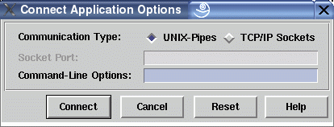

Manual
Option Dialog to Connect Application
This dialog window is used to specify additional options that are needed when an external program is connected to the API using menu File/Connect Application.... The communication type you choose has to be supported by the selected application program. When using pipes, the application has to read API commands on stdin and write API answers on stdout. When using sockets, the application has to use a specific sockets port for communication. Starting with version 3.0, the graph editor delivered with uDraw(Graph) supports both types. For other third-party application programs, please refer to the documentation to see the supported communication types.
Dialog Elements of the Connect Application Option Window
-
Communication Type
Used to select the transport protocol used for communication with the application. Pipes are the standard for uDraw(Graph), but they are only supported on UNIX® and Linux® platforms. On Windows®, please choose socket communication. The application program you want to connect must support the uDraw(Graph) API protocol and the type of communication you have selected. Please refer to the documentation of the application. -
Socket Port
When socket communication is selected, the socket port can be specified here. The default is port 2542 which is exclusively registered for uDraw(Graph), so usually there is no need to modify the default value. -
Command-Line Options
Here you can enter the options you want to pass to the application. When using sockets, the default "-client :2542" is displayed here. This is the convention of the standard graph editor to be informed about the socket port where the uDraw(Graph) server is listening. Please remove this entry if your application has any problems with this option. -
Connect
Push button to start the application executable file (specified in the browser before) and connect it to the API. -
Cancel
Push button to close the option dialog without performing any action. -
Reset
Push button to undo any modification to these options which were not confirmed using the "Ok" push button yet. So reset goes back to the current settings. -
Help
Push button to start the online help system with this page.
Copyright © 2005, Universität Bremen. All rights reserved.